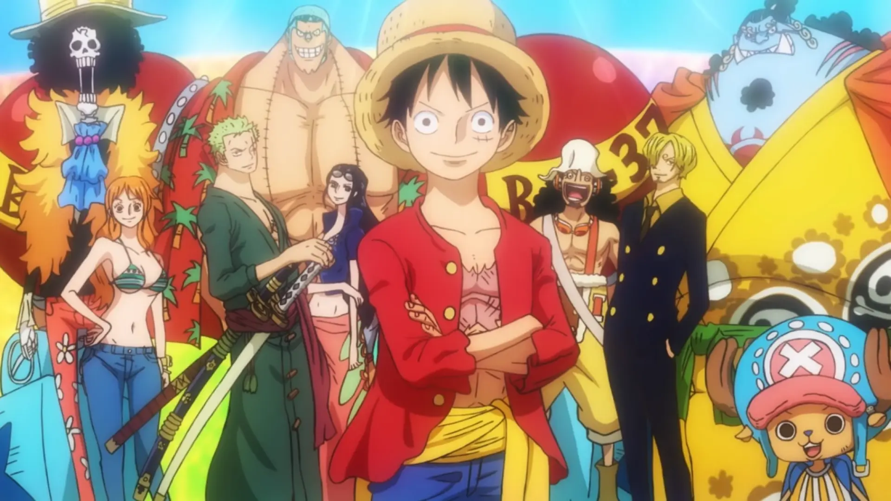
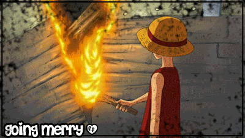
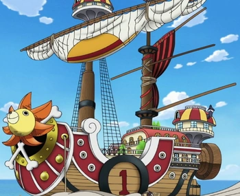

La tripulación de Monkey D. Luffy esta compuesta por un grupo de piratas con grandes
sueños. Dispuestos a dar sus vidas para lograr tantos sus objetivos como el objetivo
común de toda la tripulación, el cual es convertir a su capitán Luffy en el rey de los
piratas.
Actualmente la tripulación de los sombrero de paja o mugiwaras se compone por 10 miembros.
Cada uno de los miembros de esta tripulación tienen un papel diferente, no obstante es algo
que el propio Luffy ya ha dicho varias veces, y es que sin cada uno de sus compañeros él
estaría perdido, pues el mismo no sabe realizar esas cada una de esas acciones. Es por eso
que siempre dice lo importantes que son sus nakamas, y que de no ser por ellos jamás habría
llegado tan lejos en su aventura.

Miembros
Monkey D. Luffy capitán decidido en cumplir su sueño de convertirse en el rey de los piratas.
Roronoa Zoro gran espadachín, es la mano derecha de Luffy.
Nami navegante experta, también se encarga de controlar el dinero que gastan.
Usopp francotirador hábil y maestro de las mentiras.
Vinsmoke Sanji cocinero excepcional y luchador experto en artes marciales.
El barco es una parte fundamental en la vida de los piratas, y
la tripulaciónde los Mugiwaras ha tenido dos barcos a lo largo de
su historia.
Going Merry: este fue el primer barco oficial de
la tripulación de los Piratas Sombrero de Paja. Este barco fue un regalo de Kaya como recompensa por
haber salvado su vida. Este llego a ser muy querido por la tripulación, fue tan querido que llego a tener vida propia
y se convirtió en una parte tan importante en la tripulación como uno de ellos. Sin emabargo el Going Merry recibió
gran cantidad de daños durante sus aventuras, perdiendo varios trozos de madera siendo golpeado, fue quemado en la saga
de Skypiea, incluso su mástil principal fue roto en varias ocasiones. Por lo que al llegar al arco de Enies Lobby el Going Merry
tenía muchos parches para intentar cubrir todos los daños que tenía, no obstante cuando fueron a un astillero para ver si podían arreglarlo
estos fueron informaddos de que el barco ya no podría navegar más. Así que después de salvarles la vida al sacarlos del área de un edificio
del Gobierno, este tuvo un funeral vikingo, pues fue quemado por Luffy.
Thousand Sunny: es el segundo barco de los Piratas de Sombrero de Paja.
Actualmente es su principal medio de transporte. Fue diseñado y construido por Franky, aunque tuvo la ayuda de los capataces de la Galley-La
Company y los integrantes de de la familia Franky. El Thousand Sunny es un barco muy resistente, además de ser el doble de grande de lo que
era el Going Merry. Sus características incluyen diversas solicitudes de los miembros de la tripulación. El Thousand Sunny es un regalo de
agradecimiento por todo lo que hiceron Iceburg, aunque también sirvió como una disculpa de Franky después de que les robará y gastará su dinero,
además de la paliza que su familia le dio a Usopp. El Thousand Sunny fue construido a partir de madera procedente del Árbol del Tesoro Adam, es
gracias a ese que el barco tiene gran resistencia. Pues este ha llegado a caer desde gran altura sin recibir prácticamente ningún daño.
En este nuevo barco tiene un sistema de puertos, que esta representado por placas gigantes marcadas con números. Los vehículos estan almacenados
en un total de 6 canales.
Bandera pirata
El diseño de la bandera creado por Luffy, ya que decidió que el emblema que diferenciaría a su tripulación de cualquier otra sería que en su calabera
estuviera su característico sombrero de paja. Y como Luffy no sabe dibujar, el dibujo que vemos de la calabera en las banderas fue dibujado por Usopp.